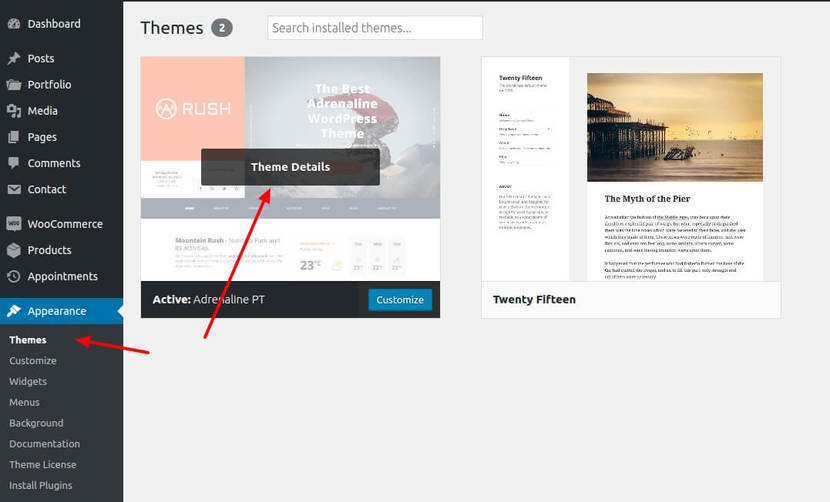
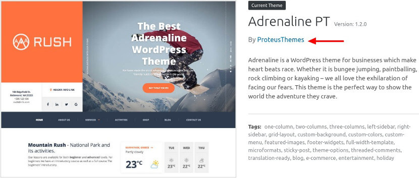

One click demo import is the easiest way to allow a new theme user to setup their site to look the same as the theme demo. In less than a year it became one of the most popular plugins in the WordPress repository (125.000+ installs at the time of writing this). Is has become de-facto choice by many theme authors. Many of them have implemented the configuration and area recommending it to their theme users/buyers.
It is possible to use the plugin even if the theme doesn't support it out of the box, but the experience is not optimal, because you as a theme user will have to find all the files and manually upload them. It takes more than a One Click™ to get to the fully working and configured WordPress theme demo. This is suboptimal.
What can you do about it?
The best thing you can do is that you contact your theme author and let them know about this plugin and how to implement it in his theme. We are developing themes ourselves and we've built this plugin scratching our own itch. We are constantly getting great feedback from our clients how well this works.
Here is an example of the email you can copy/paste (or click here to auto-populate the email):
Subject: Please configure one click demo import in your theme
Hi,
I am using your theme and it's working great but you could make it even more user friendly if you implement the One Click Demo Import plugin: https://wordpress.org/plugins/one-click-demo-import/
Where to find the author of your theme?
The easiest way is going to Appearance » Themes and click to a Theme Details:


This will usually take you to the home screen of the theme author. You will have to find there the contact details.